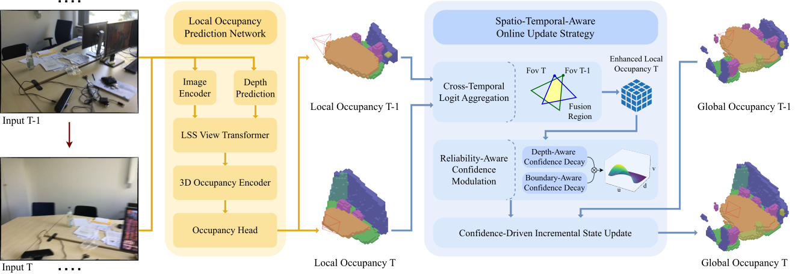
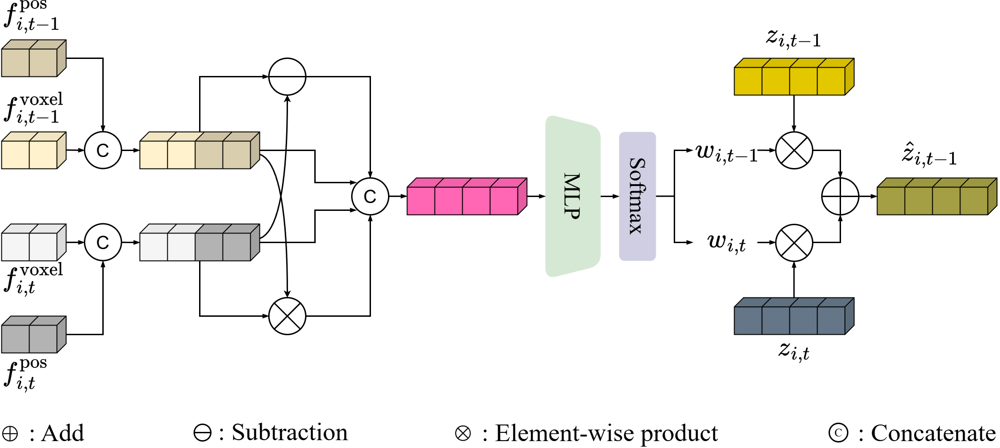
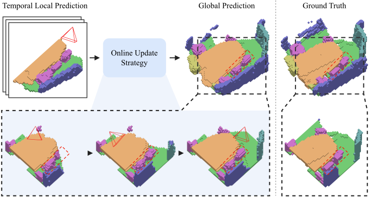
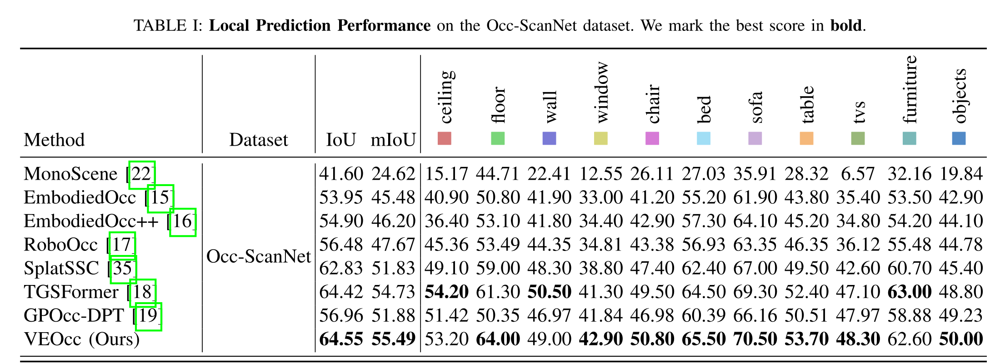
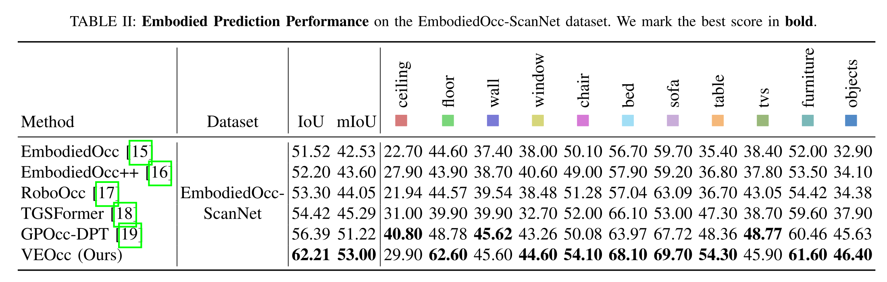

Abstract
Abstract—Crucial for autonomous exploration, online 3D occupancy prediction and mapping incrementally construct dense spatial representations on the fly. Embodied online occupancy prediction remains predominantly Gaussian-centric, despite the wide use of voxel representations for frame-wise scene completion. We present VEOcc, to the best of our knowledge, the first voxel-centric framework for online embodied semantic occupancy prediction. It incrementally maintains a sparse global semantic voxel map from monocular observations and enables open-ended expansion without predefined scene bounds. To robustly integrate noisy multi-view predictions, we further introduce a Spatio-Temporal-Aware Online Update Strategy comprising Cross-Temporal Logit Aggregation (TLA) for short-term temporal consistency, Reliability-Aware Confidence Modulation (RCM) for spatial uncertainty calibration, and Confidence-Driven Incremental State Update (CSU) for robust global state assimilation. Extensive experiments on Occ-ScanNet and EmbodiedOcc-ScanNet demonstrate state-of-the-art performance among models of comparable scale in both local and embodied settings. Moreover, onboard deployment on a mobile robot validates practical online operation and long-horizon scalability, while results on self-collected handheld sequences demonstrate zero-shot generalization to unseen real-world environments. Code and supplementary visualizations are available on our project page: https://wryzju.github.io/VEOcc/.
Zero-Shot Real-Robot Demonstrations
Methodology

The overall framework of our proposed VEOcc. Given a sequence of monocular images, a voxel-centric network first predicts frame-wise local occupancy, which is then incrementally assimilated into a global occupancy grid via the proposed Spatio-Temporal-Aware Online Update Strategy. Within this strategy, Cross-Temporal Logit Aggregation (TLA) enforces short-term temporal consistency, Reliability-Aware Confidence Modulation (RCM) calibrates spatial uncertainties, and Confidence-Driven Incremental State Update (CSU) recursively integrates these refined observations to ensure a robust global semantic state.

Design of Cross-Temporal Logit Aggregation (TLA). This module adaptively aggregates semantic logits from adjacent frames by explicitly modeling cross-view discrepancies in both feature representations and spatial contexts.

Visualization of the proposed Spatio-Temporal-Aware Online Update Strategy. As the global occupancy is incrementally built over time, unreliable predictions from early observations are progressively refined by incoming reliable observations, demonstrating the efficacy of the proposed strategy.
Quantitative Results

Local Prediction Performance on the Occ-ScanNet dataset. We mark the best score in bold.

Embodied Prediction Performance on the EmbodiedOcc-ScanNet dataset. We mark the best score in bold.
Qualitative Results

Qualitative results of local occupancy prediction on Occ-ScanNet. Our VEOcc achieves noticeably better prediction quality in object details, structural boundaries, occluded regions, and overall spatial smoothness compared with previous Gaussian-centric approaches.

Qualitative results of embodied occupancy prediction on EmbodiedOcc-ScanNet. Our VEOcc successfully achieves high-quality online occupancy prediction under diverse exploration trajectories.

Zero-shot real-world generalization on self-collected indoor sequences. We show the COLMAP sparse reconstruction and our incrementally generated global semantic occupancy map for a single-room layout (left) and double-room layouts (middle, right). Without fine-tuning or scene priors, VEOcc produces coherent global occupancy maps across unseen environments under rich viewpoint variations.
Additional Visualizations
EmbodiedOcc-ScanNet
Self-Collected Indoor Sequences
BibTeX
@ARTICLE{11731444,
author={Wang, Ruoyu and Liu, Yong and Li, Jiahan and Tao, Sheng and Lin, Yuhang and Ma, Yukai},
journal={IEEE Robotics and Automation Letters},
title={VEOcc: Voxel-Centric Online Semantic Occupancy Prediction for Embodied Scene Understanding},
year={2026},
volume={},
number={},
pages={1-8},
keywords={Modeling;Conferences;Cameras;Computers;Computer vision;Visualization;Silicon;Probability;Sequences;Sequential analysis;Semantic Scene Understanding;Mapping;Deep Learning for Visual Perception},
doi={10.1109/LRA.2026.3742277}
}